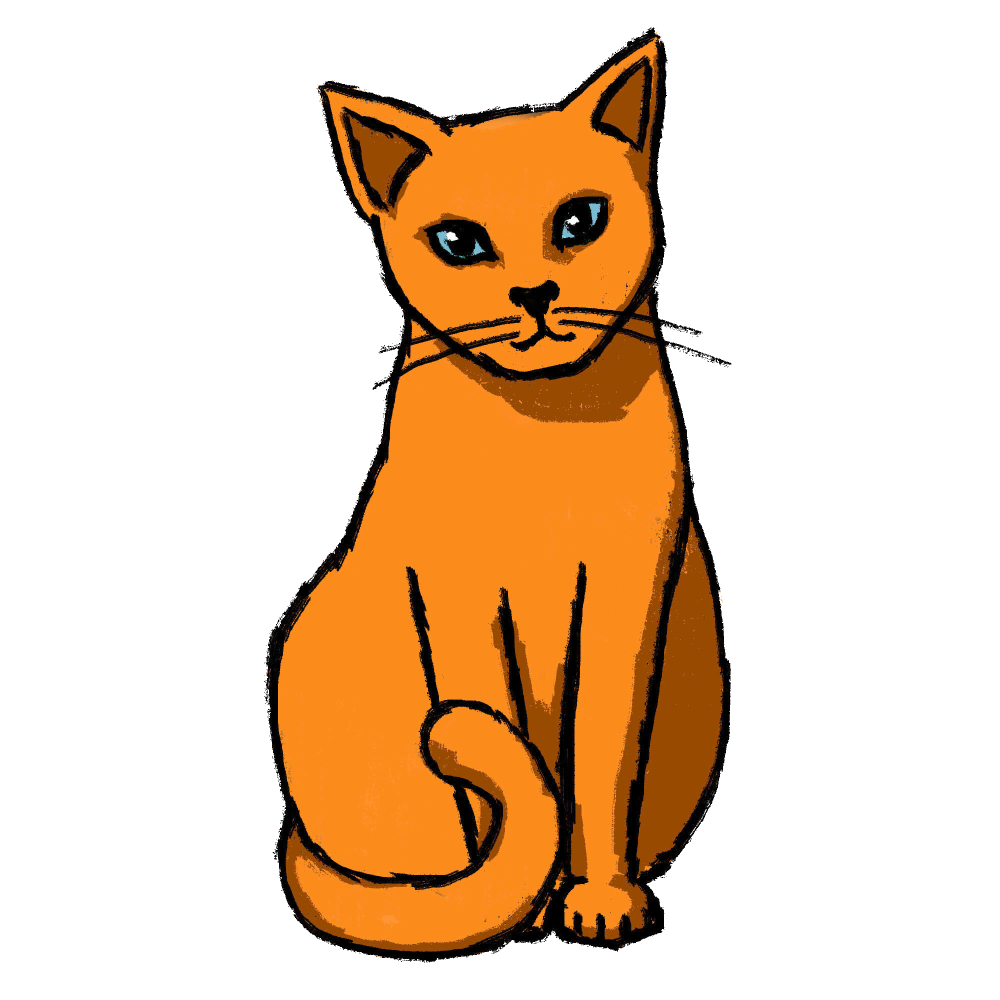
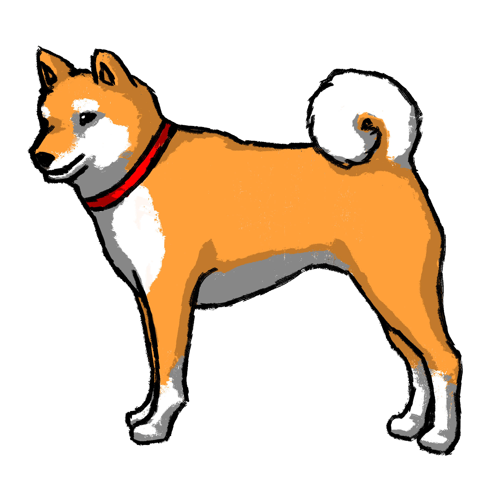
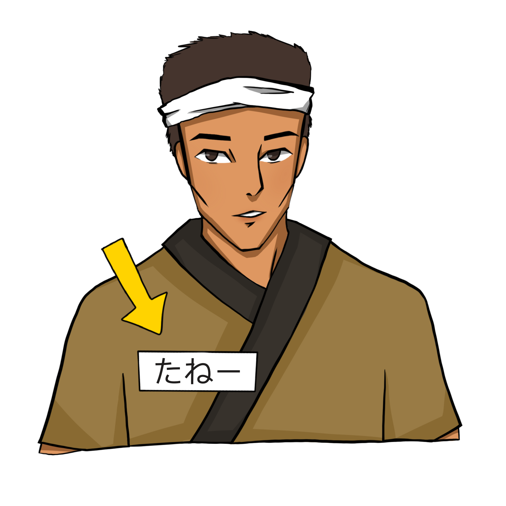

第二課
おー、あーい
どーでぃん みーし たぼーんなーら
単語１
文法１
練習１
単語２
文法２
練習２
単語復習
復習


文法を習いましょう！
おー、うれーびぎどぅんぷぃとぅゆ！
おー、うれーみーどぅんぷぃとぅゆ！

あーい、 うれー ぷぃとぅ あらぬ。
うれー まやーゆ！

あーい、 うれー ぷぃとぅ あらぬ。
うれー いんゆ！
練習しましょう！
うれー いんかやー？
あーい、うれー いん あらぬ。
うれー すぃぶぃらゆ！
うれー みーどぅんぷぃとぅかやー？
おー、うれー みーどぅんぷぃとぅゆ！
うれー ぐしかやー？
あーい、うれー ぐし あらぬ。
うれー ぷぃとぅゆ！
うれー すぃま ばそんなるぃかやー？
おー、うれー すぃまばそんなるぃゆ！

文法を習いましょう！
うれー なびーゆー。

うれー たるーゆー。


練習しましょう！
うれー たるかやー？
うれー たるーゆー。
うれー たるかやー？
うれー なびーゆー。
うれー のーでぃどぅ あんずぃかやー？
うれー なびーでぃどぅ あんずぃゆー。
うれー のーでぃどぅ あんずぃかやー？
うれー たるーでぃどぅ あんずぃゆー。
答えて下さい！
答えて下さい！
ばーや たるーでぃどぅ あんずぃゆー。
わーや のーでぃどぅ あんじょーるかやー？
ばーや 〇〇でぃどぅ あんずぃゆー。
どーでぃん みーし たぼーんなーら。
答えて下さい！
答えて下さい！
ばーや たるーでぃどぅ あんずぃゆー。
わーや のーでぃどぅ あんじょーるかやー？
ばーや 〇〇でぃどぅ あんずぃゆー。
どーでぃん みーし たぼーんなーら。
復習しましょう！
進む前にフィードバックお願いします！| ぷぃとぅ
みーどぅん ぷぃとぅ びぎどぅん ぷぃとぅ すぃぶぃら ばー わー うれー たる 〜や 〜でぃ あんずぃ・あんじょーる どーでぃん みーし たぼーんなーら |
人
女 男 島ネギ 私 あなた 彼/彼女 誰 〜は 〜と 言う・おっしゃる どうぞよろしくお願いします |